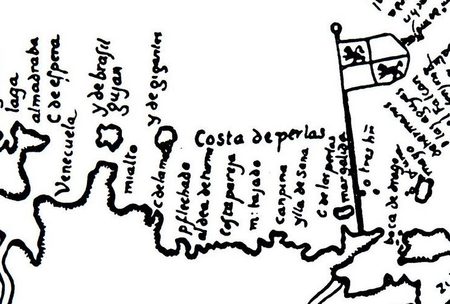
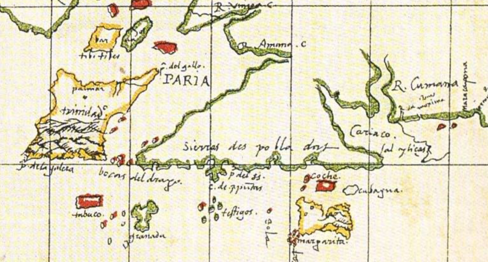

Capítulo 3 La Costa de las Perlas.
… que no quiero creer en dios ni en la ley judaica ni mosaica sino vida y muerte y no mas; y otras muchas heregias [4].―Lope de Aguirre
A la costa nororiental venezolana, actual litoral y mar contiguo del estado Sucre, la península de Araya, el golfo de Cariaco y el archipiélago conformado por las islas Margarita, Coche y Cubagua; se le denominaba indistintivamente en el siglo XVI: «Costa de las Perlas».
La Costa de las Perlas, cuando el siglo XVI, fue patio y frontal; tanto de los pobladores de la isla de Margarita como de los de Cumaná. Está íntima relación geográfica queda definida claramente en el «Portulano de Juan de la Cosa [Figura 3.0.1], donde es resaltado como nombre de una buena zona del mar; que luego por sus perlas o margaritas fue escenario de nuestro propio “dorado” y terror centrado en la ciudad de Nueva Cádiz de la isla de Cubagüa y de toda vecindad que le era imprescindible: la boca del río de Cumaná y el seno del golfo de Cariaco. Al principio, las perlas se podían obtener mediante el trueque de cosillas y bisuterías o desperdicios de trozos de porcelana. Luego, una barbarie superior a cualquiera de las de Aguirre imperó en la tierra y en el agua de la vecindad de la pequeña isla: los horrores en América, fueron superlativos en Cubagüa.
El topónimo Cumaná está señalado por vez primera en la carta «Universal Mundus Novus»; elaborada en 1529 en base al Padrón Real por el portugués Diego Ribero, igualmente está señalado el topónimo Cumaná en un cartograma de 1556 conocido como «Mapa de los Aruacas» [Figura 3.0.2]. Donde se señala específicamente a la zona terrestre de las penínsulas Paria-Araya como «Sierras despobladas». La incipiente Cumaná, sobrevivía sola —realenga— y a lontananza de España.

